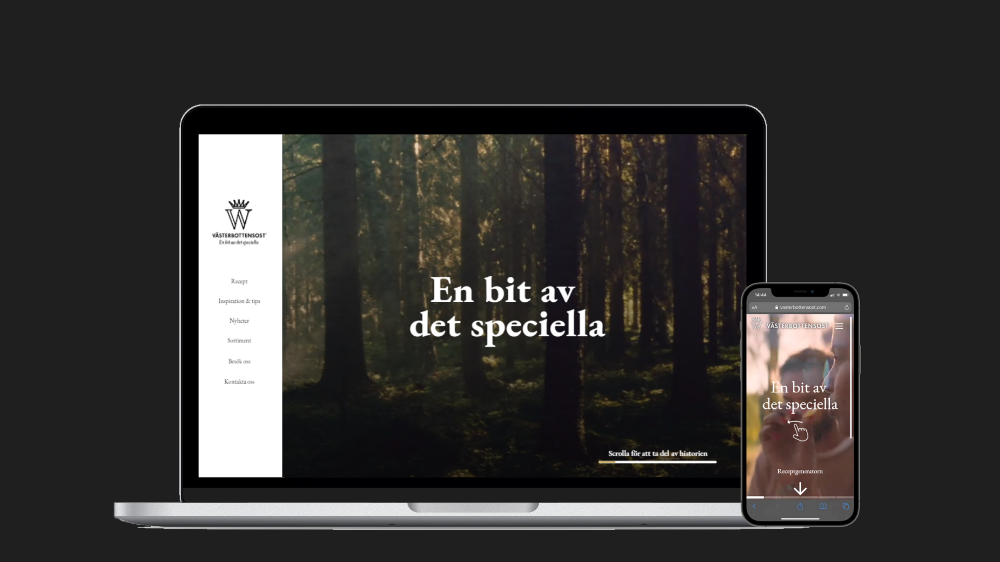
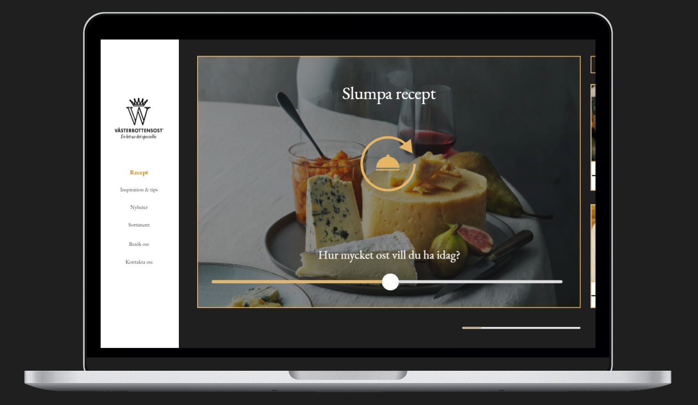
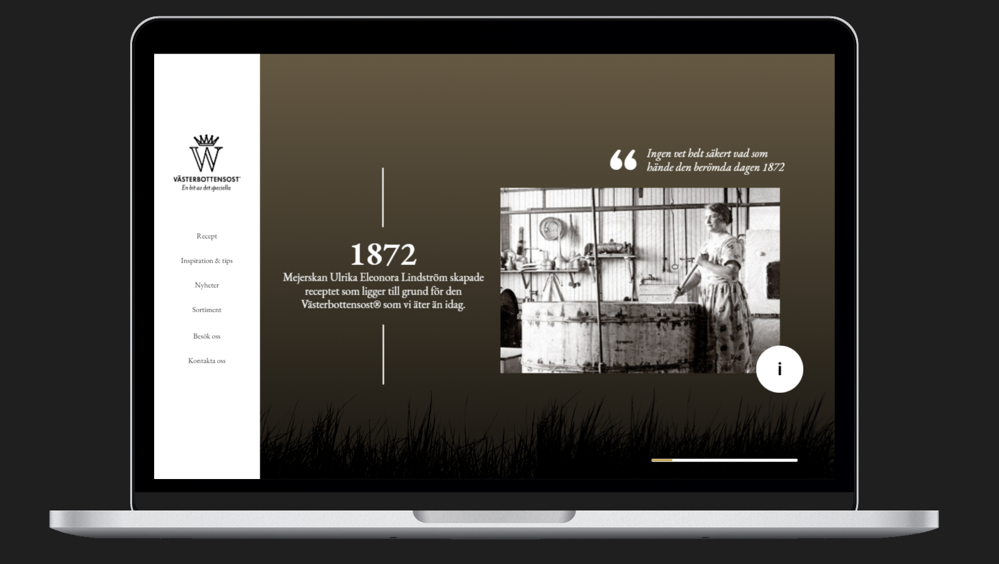
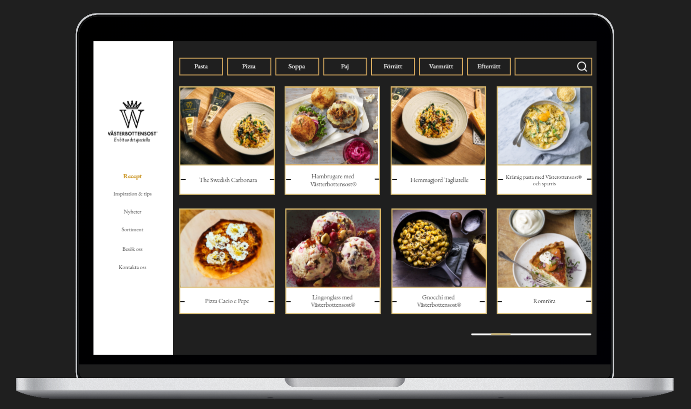

An assignment project from the Design for user experience course in collaboration with
Västerbottensost®
During a four week long project we collaborated with the famous Swedish cheese, Västerbottensost®, to redesign their
website to match their need better, based on their current branding goals. I was the project manager in my team.


Our goal was to redesign the website based on the brands vision of being known as a premium cheese that people are
ready to pay high prices for, while also hoping to inofficially becoming the "national cheese" of Sweden. We created
a baseline of three keywords that we felt defined our goal and also the Västerbottensost® brand. Those words were
heritage, mystique and high quality
We did a lot of prototyping and user tests to finally land on a concept that we truly believed in. Our early ideas involved
some very out of the box concepts, like the whole website being a 360-degree virtual tour of the cheese factory. However, we let the users
decide which of our concepts they liked best, and their preference based on our keywords was something we called The Story.
The story is a timeline of the heritage of Västerbottensost®, that takes the user on a intuitive step-by-step tour through the
brands history. To give it all a twist by makin all the pages scroll horizontally instead of vertically, which enhances the feeling of the
first page being a timeline.


On the subpages, like the page for all recipes, we changed the color to a softer grey instead of pitch-black, and designed simple
buttons with a gold trim for that clean, premium feeling. The pages are also easier to navigate as we removed the cluster of submenus
in the navigation bar and scaled it down significantly.
Click the pictures below to see the prototypes of the desktop and mobile websites respectively
Please note that some functions are not in place for these prototypes. For example, the navigation bar is suppposed to be minimized
when the user starts scrolling.